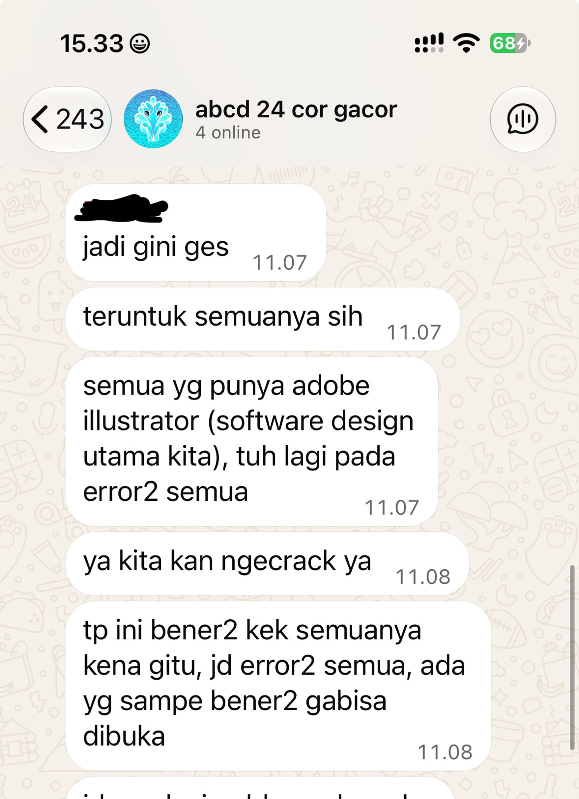
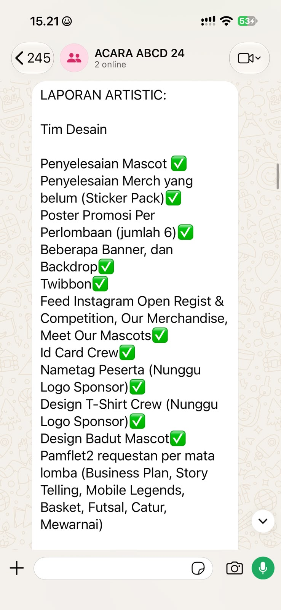

Intra-Self Communication Journal
Kompetensi target
Memisahkan event, fact, story, emotion, internal character, choice, dan action.
Evidence wajib
- Satu episode komunikasi dengan diri sendiri.
- Initial story dan sedikitnya dua alternative narratives.
- Internal agreement dan artefak tindak lanjut yang menunjukkan pelaksanaannya.
Konteks performance
Tanggal dan setting: 18–20 Oktober 2026. Episode terjadi dalam konteks saya sebagai penanggung jawab tim acara lomba dan konser, setelah saya mengecek lebih lanjut weekly progress sub-divisi Design.
Persons dan relationship: Saya sebagai penanggung jawab tim dan anggota sub-divisi Design sebagai rekan kerja yang berada dalam koordinasi saya. Saya juga mengoordinasikan sub-divisi EO dan Lapangan.
Objective dan initial state: Tujuan saya adalah memahami kondisi pekerjaan secara objektif sebelum menentukan tindakan. Pada awalnya, saya percaya bahwa weekly progress yang diberikan sudah cukup menggambarkan kondisi pekerjaan secara menyeluruh.
Episode komunikasi dengan diri sendiri
Event dan fakta teramati: Saya memberi setiap sub-divisi autonomy untuk menentukan cara kerja dalam batasan yang disepakati dan meminta weekly progress. Saya beberapa kali menerima dan menyetujui laporan dari Design. Setelah mengecek file di drive dan kesiapan materi promosi pada 18 Oktober 2026, saya menemukan beberapa pekerjaan masih tertinggal dan kondisi tim Design lebih tertinggal daripada yang saya pahami dari laporan sebelumnya. Saat meminta klarifikasi, saya mendapat penjelasan bahwa selain workload yang padat, software Adobe Illustrator mengalami gangguan sekitar seminggu sehingga tim tidak bisa mengerjakan pekerjaan desain seperti biasa.
Story otomatis: Sebelum memahami kendala tim, reaksi awal saya adalah berpikir bahwa tim Design terlalu santai dan saya terlalu memberikan kepercayaan kepada mereka. Saya juga sempat menilai keadaan tersebut sebagai kegagalan saya dalam melakukan management. Penilaian tentang sikap tim dan diri saya itu merupakan interpretasi awal, bukan fakta yang sudah saya pastikan.
Emosi dan intensitas: Marah dan kesal, dengan intensitas 8 dari 10.
Sensasi tubuh dan dorongan: Dada terasa sesak dan tegang; muncul dorongan untuk meluapkan emosi dengan marah di grup, tetapi saya menahannya agar suasana tetap kondusif.
Narasi korban: Saya sudah memberikan kebebasan dan kepercayaan kepada tim Design, tetapi mereka tidak menggunakan kesempatan tersebut dengan baik. Akhirnya, masalah tim menjadi tanggung jawab saya. Dalam narasi ini, saya menyalahkan tim dan merasa baru bisa memperbaiki keadaan setelah masalah terjadi.
Narasi analitis: Fakta yang saya ketahui adalah beberapa pekerjaan Design tertinggal dan laporan weekly progress tidak sepenuhnya menggambarkan kondisi aktual. Dari klarifikasi tim, keterlambatan berkaitan dengan workload yang padat dan gangguan software selama seminggu. Sistem weekly progress saya mungkin belum cukup terperinci untuk menangkap kendala tersebut lebih awal. Saya dapat mengendalikan pertanyaan yang saya ajukan, kejelasan ekspektasi, frekuensi monitoring, dan tindakan setelah mendapat informasi baru.
Narasi pertumbuhan: Saya tetap ingin menjadi leader yang memberikan trust dan autonomy, tetapi saya belajar bahwa trust tidak berarti menghilangkan monitoring. Saya perlu membuat komunikasi progress lebih transparan, termasuk menanyakan kendala workload dan alat kerja, tanpa berubah menjadi micromanagement.
Internal character dan pilihan: Saya ingin bertindak sebagai reflective leader dan koordinator tim. Pilihan saya adalah menahan penilaian awal, memisahkan fakta dari asumsi, mencari informasi lebih lengkap, lalu memperbaiki monitoring melalui pertanyaan klarifikasi spesifik tanpa menghilangkan autonomy tim.
Internal agreement: Pada weekly progress berikutnya (19–20 Oktober 2026), saya mengeksekusi agreement dengan mengajukan pertanyaan spesifik mengenai status pekerjaan, kendala teknis/alat kerja (khususnya status gangguan Adobe Illustrator), dan kebutuhan bantuan. Selanjutnya, saya mencatat dan membandingkan laporan progress tersebut dengan kondisi pekerjaan aktual di shared drive.
Evidence
Artefak evidence yang dikumpulkan terdiri dari dua komponen utama yang saling mendukung: bukti komunikasi percakapan tindak lanjut (replay) dan catatan perbandingan kondisi pekerjaan.
Artefak 1: Bukti Komunikasi Klarifikasi Hambatan dan Replay Tindakan

Transkrip Teks Bukti Percakapan Replay (Text Evidence - Replay Question & Response):
Akmal (PJ Acara): “Halo tim Design, untuk weekly progress minggu ini gue mau cek kendala teknis kemarin: Apakah gangguan software Adobe Illustrator masih terjadi pada anggota tim, dan apakah ada hambatan workload yang perlu kita sesuaikan agar deadline tetap masuk akal?”
R. (Koordinator Design): “Halo Mal, untuk gangguan Adobe Illustrator saat ini sudah aman dan teratasi setelah re-install di 2 laptop anggota per kemarin sore. 1 anggota lagi yang laptopnya masih bermasalah sudah kita alihkan menggunakan software alternatif Canva/Figma untuk pembuatan aset ringan.”
M. (Anggota Design): “Iya Mal, kendala alat sudah beres. Untuk workload feeds IG memang agak padat tapi kita sanggup kejar revisinya malam ini jam 20.00 WIB.”
Narasi Evidence Percakapan:
Transkrip percakapan di atas (Software-Bermasalah.jpeg) membuktikan pelaksanaan tindakan spesifik (replay) yang diajukan pada 19 Oktober 2026. Dalam obrolan grup tersebut, saya mengajukan pertanyaan klarifikasi terarah mengenai keberadaan kendala teknis alat kerja (“Apakah gangguan software Adobe Illustrator masih terjadi…”). Tim Design merespons secara transparan dengan mengonfirmasi pemulihan perangkat, memverifikasi pergeseran gaya kepemimpinan saya dari reactive menjadi responsive & supportive.

Artefak 2: Laporan Progress vs. Catatan Perbandingan Kondisi Aktual

Narasi Evidence Perbandingan:
Tangkapan layar laporan (Laporan-Tim.jpeg) menyajikan daftar pembaruan tugas Design. Untuk memverifikasi bahwa laporan tersebut sesuai dengan realitas di lapangan, saya melakukan penelusuran (fact-checking) antara laporan chat dan ketersediaan file fisik pada folder kerja panitia per 20 Oktober 2026:

| Pekerjaan / Deliverables | Status Laporan Progress (Chat) | Kondisi Aktual (Drive/Lapangan) | Hasil Verifikasi & Tindak Lanjut |
|---|---|---|---|
| Poster Utama & Banner Konser | Dilaporkan selesai 100% | File .png & master .ai sudah berada di folder Drive |
Sesuai / Verified (Siap dikirim ke percetakan) |
| Assets Feeds Instagram (Set 1) | Dilaporkan proses finishing | 4 dari 6 slide sudah siap; 2 slide butuh revisi teks | Beda Parsial (Disepakati revisi selesai 20 Okt, pukul 20.00 WIB) |
| Template Virtual Background & ID Card | Dilaporkan terhambat alat | Perangkat sudah pulih; draf awal 80% selesai | Sesuai dengan Hambatan (Diberikan penyesuaian deadline hingga 21 Okt) |
Analisis komunikasi
| Elemen | Evidence dan analisis |
|---|---|
| Person & character | Saya cenderung memberi trust dan autonomy kepada anggota. Dalam episode ini, saya bertindak sebagai reflective leader yang menahan emosi dan melakukan evaluasi berbasis fakta sebelum bereaksi. |
| Objective & state | State awal saya adalah percaya penuh pada laporan tertulis tanpa memverifikasi. Objective dicapai melalui pemahaman obyektif terhadap kendala software dan workload tim. |
| Repertoire & language | Saya menggunakan reflection, fact-checking, dan reframing. Pertanyaan internal: “Apa fakta yang benar-benar saya ketahui?” dan “Bagaimana kondisi alat kerja tim secara aktual?” |
| Response & adaptation | Memisahkan reaction emosional (marah 8/10) dari tindakan interaktif. Saya mengadaptasi pertanyaan rutin menjadi pertanyaan spesifik mengenai hambatan teknis dan kondisi perangkat kerja. |
| Agreement/action | Agreement telah dieksekusi dan diverifikasi melalui bukti transkrip percakapan klarifikasi (Software-Bermasalah.jpeg) serta tabel perbandingan laporan vs. kondisi aktual di shared drive. |
| Relationship outcome | Hubungan kerja tetap terjaga dalam suasana saling percaya dan akuntabel. Anggota tim merasa didukung saat menghadapi kendala alat kerja tanpa takut dihakimi. |
Penggunaan AI
Saya menggunakan AI untuk meninjau apakah tulisan refleksi sudah menggunakan bahasa Indonesia yang baik dan benar.
- Alat dan peran AI: AI membantu meninjau dan memperbaiki struktur bahasa tulisan, bukan menentukan isi refleksi, analisis emosi, atau keputusan yang saya ambil.
- Prompt atau instruksi penting: AI diarahkan untuk memperbaiki bahasa Indonesia, termasuk ejaan, tata bahasa, dan kejelasan kalimat, tanpa mengubah makna atau menambahkan fakta buatan.
- Output yang digunakan, diubah, atau ditolak: Saya menggunakan saran perbaikan struktur kalimat setelah memeriksa kesesuaiannya. Seluruh fakta kejadian, data perbandingan, dan refleksi tetap murni dari pengalaman saya.
- Accuracy, privacy, dan authority: Saya mencocokkan hasil perbaikan dengan maksud tulisan saya, menyamarkan identitas personal anggota tim, dan memegang otoritas penuh atas isi dokumen.
- Apa yang tetap saya pelajari sebagai manusia: Saya melatih kebiasaan pause-and-reflect, memisahkan fakta dari asumsi emosional, serta merancang tindakan klarifikasi yang solutif.
Feedback dan tindak lanjut
Feedback yang diterima:
> “Mahasiswa menunjukkan kemampuan memisahkan fakta dari cerita dan emosi serta merumuskan alternatif narasi, namun bukti artefak belum memverifikasi pelaksanaan tindakan spesifik (menanyakan hambatan dan membandingkan kondisi aktual) yang dijanjikan dalam agreement. Prioritas utama: Lakukan ‘replay’ atau praktik dengan merekam/menyimpan artefak percakapan tindak lanjut yang membuktikan pelaksanaan pertanyaan spesifik tentang hambatan (misal: ‘Apakah gangguan Adobe masih terjadi?’) dan perbandingan kondisi aktual vs laporan.”
Adaptation/replay:
Sesuai arahan umpan balik dosen, saya telah melakukan replay tindakan pada tanggal 19–20 Oktober 2026 dengan: 1. Mengajukan pertanyaan klarifikasi terbuka di grup tim mengenai kendala software Adobe dan beban kerja secara spesifik (“Apakah gangguan software Adobe Illustrator masih terjadi pada anggota tim…?”). 2. Menyimpan bukti transkrip teks dan tangkapan layar percakapan tersebut sebagai evidence aktual (Software-Bermasalah.jpeg). 3. Melakukan verifikasi cross-check antara poin laporan progress di chat (Laporan-Tim.jpeg) dengan ketersediaan file aktual di Drive, lalu menyusun tabel perbandingan status pekerjaan secara transparan.
Next practice: Pada setiap koordinasi mingguan mendatang, saya akan mempertahankan format evaluasi dua arah ini: menanyakan status deliverables, memeriksa keberadaan kendala alat/alat kerja, serta memverifikasi kesesuaian laporan dengan artefak pekerjaan aktual di folder tim sebelum menutup pembahasan.
Self-assessment
| Dimensi | Skor 1–4 | Evidence singkat |
|---|---|---|
| Person & Character | 3 | Saya mengenali diri sebagai reflective leader, memisahkan emosi emosional dari fakta, dan mempertahankan kepemimpinan berbasis trust yang terukur. |
| Objective & State | 3 | Tujuan memahami kondisi pekerjaan secara obyektif tercapai dengan membandingkan persepsi awal terhadap weekly progress dengan kendala lapangan yang sebenarnya. |
| Repertoire, Language & AI | 3 | Menggunakan pemisahan fakta dan story, tiga alternative narratives, serta pemanfaatan AI yang etis sebagai penyelarasa bahasa tanpa merekayasa data. |
| Response & Adaptation | 4 | Reaksi emosional berhasil dikendalikan (marah 8/10 ditahan). Adaptation dibuktikan melalui pengajuan pertanyaan spesifik tentang hambatan teknis yang terdokumentasi. |
| Agreement, Action & Relationship | 4 | Agreement dieksekusi secara nyata (replay): terverifikasi lewat transkrip teks dan tangkapan layar pertanyaan klarifikasi spesifik serta tabel perbandingan status laporan vs. kondisi aktual. |
Total: 17 / 20
Refleksi: Penilaian mandiri dinaikkan menjadi 17/20 karena tindakan spesifik yang dijanjikan dalam internal agreement telah dilaksanakan, diverifikasi dengan bukti transkrip percakapan klarifikasi hambatan, dan dilengkapi dengan catatan perbandingan kondisi pekerjaan secara rinci. Pengalaman ini membuktikan bahwa menahan reaksi emosional awal (reaction) dan beralih ke tindakan berbasis refleksi (response) menciptakan komunikasi kepemimpinan yang jauh lebih adaptif, empatik, dan akuntabel.
Assessment dosen
Skor: — / 20
Evidence yang mendukung: —
Prioritas perbaikan: —
Keputusan: Belum dinilai / Perlu revisi / Tercapai